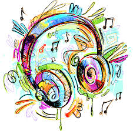
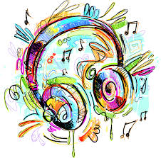

MUSIC BLOG


¡Musica! conciderada por muchos como un arte, un lenguaje o hablando de forma mas tecica; una combinacion perfecta de armonia, melodia y tiempo.
son muchas las definiciones que podemos encontrar a lo largo y ancho de la red, bibiotecas o historiodores, pero cada quien puede definir la musica de modo personal. en mi opinion personal musica va mas alla de un lenguaje o un arte, es mas como una forma de vida, la exprecion total de las emociones que tenemos en lo mas profudo y recondito de nuestra mente y corazo, con la cual podemos expreszar alegria, tristeza, enojo, aflicciones, protestas, en fin inumerables emociones y sentimietos.
hasta el momento no he podido econtra una tansola persona a la cual no le guste la musica, cada quien tiene sus gustos musicales en una gran variedad de generos musicales que existen; por ejemplo, algunos viven su vida al ritmo del jazz y otros ecuentran su pasion por medio del rock y otros mueven su cuerpo al ritmo del merengue, demostrando asi que la musica en su totalidad no discrima ni excluye a nadie, dando divercidad para escoger lo que nos guste, es imposible diria yo encontrar un ser humano que no goze de esto tan hermoso a lo que llamamos musica.
Muse es una banda inglesa de rock alternativo originaria de Teignmouth, Devon. Sus integrantes desde su formación en la década de los años 90 son: Matthew Bellamy (compositor, voz, guitarra, teclado y piano); Dominic Howard (batería y percusión); y Christopher Wolstenholme (bajo eléctrico, teclados y coros).
Tras el lanzamiento de su cuarto álbum, Morgan Nicholls comenzó a colaborar con la banda durante las presentaciones en vivo, haciéndose cargo de teclados, samples, de algunos coros, rara vez del bajo y últimamente de la segunda guitarra.
La banda es conocida por sus extravagantes shows en vivo (frecuentemente considerados como 'los mejores del mundo'), por fusionar géneros musicales como el rock espacial, rock progresivo, heavy metal, música clásica y electrónica en su estilo de rock alternativo, y por los excéntricos intereses de Matthew Bellamy en la conspiración global, la revolución, la astrofísica, vida extraterrestre, los fantasmas, la teología y el apocalipsis; temas que se ven reflejados en sus letras.
En 2011
Los miembros de Muse se desempeñaron en diferentes bandas durante su estancia en Teignmouth Community College y Coombeshead College a principios de 1990. La formación de Muse comenzó cuando Bellamy realizó una prueba para ser el guitarrista de la banda de Dominic Howard. Tiempo después y tras varios cambios en la banda (salida del vocalista y otros miembros) le pidieron a Chris Wolstenholme (quien tocaba la batería en ese momento con Fixed Penalty) que aprendiera a tocar el bajo para unírseles. Wolstenholme estuvo de acuerdo y tomó lecciones.
El grupo tuvo varios nombres antes de Muse, como Gothic Plague o incluso Rocket Baby Dolls, pero fue con su nombre actual con el cual en 1994 y con una imagen goth/glam, el grupo ganó una competición de bandas locales, destrozando sus equipos en el proceso. "Se suponía que iba a ser una protesta, una declaración", dijo Bellamy, "así que, cuando realmente ganamos, fue un verdadero shock. Una enorme conmoción. Después de eso comenzamos a tomarnos en serio a nosotros mismos”. Poco después, los tres decidieron renunciar a la universidad, dejar sus puestos de trabajo, cambiar el nombre de la banda a Muse (1994-1995), y alejarse de Teignmouth.
la banda ganó su primer premio Grammy, al ganar en la categoría Mejor Álbum de Rock por The Resistance.
NOMBRE:
La banda actualmente se llama "MUSE" , ya que despuès de varios nombres alternativos gustaron quedarse con ese.

 
